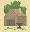

Постройки
Арсенал
Военный склад может быть модернизирован в арсенал, когда население колонии 8. Арсенал удваивает выпуск мушкетов, если доступны требуемые инструменты.
Верфь
Верфи - это средства, которые содержат все необходимое оборудование для постройки кораблей. Наличие верфи в колонии позволяет плотникам строить корабли.
Военный склад
Слесарня может быть модернизирована в военный склад, когда население колонии достигает 8. Военный склад удваивает выпуск мушкетов, если доступны требуемые инструменты.
Газета
Газеты собирают форум для отражения того, что волнует людей. Этот общественный форум может создать дух сообщества и братства, который формирует чувство патриотизма в колонии. С газетой, производство Колоколов Свободы в колонии увеличивается на 100%.
Доки
Доки - это пристани и причалы, необходимые для обработки рыбы, собранной в различных рыбных местах и промыслах по побережьям Нового Света. Доки позволяют вашим колонистам работать рыбаками в любом квадрате океана или озера, смежном с вашей колонией.
Дом винодела
 В некоторых областях можно культивировать прекрасный сахарный тростник; некоторые из индейцев культивируют его на больших областях. Колонисты знают, что его можно перерабатывать в ром. Колонист в доме винодела может производить ром, если под рукой имеется сахар для работы. Ром разливается по бутылкам и хранится на складе.
В некоторых областях можно культивировать прекрасный сахарный тростник; некоторые из индейцев культивируют его на больших областях. Колонисты знают, что его можно перерабатывать в ром. Колонист в доме винодела может производить ром, если под рукой имеется сахар для работы. Ром разливается по бутылкам и хранится на складе.
Дом кузнеца
 Колониальная община помогает строить дом кузнеца по тем же самым причинам, что и магазин плотника, но в еще большей степени. Они понимают потребность в основных металлических товарах - инструментах, ремонте существующих орудий, и так далее. Колонист, работающий в магазине кузнеца может производить инструменты, которые накапливаются на складе поселения. Чтобы производить инструменты кузнецу нужна руда.
Дом мехоторговца
Одна из первых вещей, которую замечают ваши колонисты, попадающие в Америку, - это невероятное изобилие млекопитающих с мехом и огромное использование того, что некоторые из индейцев делают из этих шкур. Они также поняли, что можно извлечь прибыль от продажи меха или от изготовления одежды из него. Колонист, работающий в доме мехоторговца, может производить шубы, если имеется мех, доступный для работы. Шубы будут накапливаться на складе.
Дом табачника
Некоторые колонисты обнаружили табак у индейцев и уже обучаются, как ухаживать за табаком, высушивать его и делать из него сигары. Однажды, эта работа может перерасти в основную индустрию. Колонист, работающий в доме табачника, может производить сигары, если имеется доступный табак. Любые производимые сигары накапливаются на складе.
Дом ткача
Индейцами в Америке используется новый сорт хлопка , и некоторые колонисты работают с ним, чтобы ткать прекрасный сорт ткани. Колонист, работающий в доме ткача может произвести ткань, если имеется доступный для работы хлопок. Любая производимая ткань накапливается на складе.
Колледж
Школа может быть модернизирована в колледж, когда население достигает 8. Он функционирует идентично школе, за исключением: два специалиста могут преподавать одновременно, и можно обучать следующим дополнительным навыкам:
- Сахаровод-мастер
- Хлопкороб-мастер
- Табаковод-мастер
- Винодел-мастер
- Ткач-мастер
- Табачник-мастер
- Мехоторговец-мастер
- Кузнец-мастер
- Оружейник-мастер
- Солдат-ветеран
Конюшни
Конюшни строятся в колониях для увеличения размножения лошадей. По завершению постройки конюшен, воспроизводство лошадей удваивается.
Крепость
Крепость - это модернизированный форт, который может быть построен, когда население колонии достигает 8 и уже имеет форт в этом месте. Толстая деревянная баррикада укрепляется и, в критических местах, заменяется каменной кладкой. В амбразурах теперь размещается артиллерия, которая используется более экстенсивно. Хорошо спланированные, перекрывающиеся области огня характеризуют внешние подходы. Крепость, с которой наблюдается океан, будет замедлять продвижение иностранных судов и открывать огонь по ним, если они подойдут слишком близко. Единицы внутри крепости получают 200% защиты.
Лесопильня
Скромный магазин плотника может быть улучшен и модернизирован и сделать работающих там более эффективными. Вы можете модернизировать магазин плотника в лесопильню, когда население колонии достигает 3. Это удваивает выпуск молотков любыми колонистами, работающими там, но требует,конечно, эквивалентного количества бревен.
Магазин кузнеца
Дом кузнеца может быть расширен в более крупную мастерскую, что увеличивает производство инструментов. Вы можете начать этот проект, когда население колонии достигнет 4.
Магазин мехоторговца
Магазин мехоторговца в колонии увеличивает выпуск шуб любыми колонистами. Чтобы начать его строительство, колония должна иметь население, по крайней мере, 4.
Магазин плотника
Община строит магазин плотника из-за очевидной потребности в создании всех типов вещей и изделий на благо общины. Колонист, работающий в магазине плотника производит молотки, которые накапливаются, чтобы строить здания, и строения в поселении. Обратите внимание, однако, что плотнику, чтобы создать молотки, нужны бревна.
Магазин табачника
Магазин табачника в колонии увеличивает выпуск сигар любыми работниками. Чтобы начать строительство магазина табачника, колония должна иметь население, по крайней мере, 4.
Магазин ткача
Магазин ткача в колонии увеличивает выпуск ткани любыми ткачами. Чтобы начать строительство магазина ткача колония должна иметь население, по крайней мере, 4.
Металлозавод
Ваши колонисты могут строить металлозавод, когда население колонии достигает 8. Он - главное средство обработки металлапродукции и наглядно увеличивает выпуск инструментов. Металлозавод - это здание уровня фабрики и не может быть построен до вступления Адама Смита в ваш Континентальный Конгресс.
Меховая фабрика
Магазин мехоторговца может быть модернизирован в меховую фабрику. Меховая фабрика наглядно увеличивает эффективность действий и, таким образом, производит больше шуб на единицу меха. Чтобы начать строительство меховой фабрики, в вашем Континентальном Конгрессе должен быть Адам Смит, и население колонии должно быть, по крайней мере, 8.
Перегонный завод
Перегонный завод по производству рома в колонии увеличивает выпуск рома любыми виноделами. Чтобы начать строительство перегонного завода, колония должна иметь население, по крайней мере, 4.
Печатный пресс
Печатные прессы и газеты собирают форум для выражения настроений общества. Этот общественный форум может создать дух сообщества и братства, который формирует чувство патриотизма в колонии. Когда печатный пресс закончен, производство Колоколов Свободы в колонии увеличивается на 50%.
Расширение склада
Обычно в складе может храниться до 200 тонн грузов каждого типа. Ваши плотники могут построить расширение склада, при этом вместимость увеличивается еще на 100 тонн. Склад с расширением выглядит как и обычный склад, но на нем добавлено "2".
Ратуша
Ратуша - одна из первых структур, где собираются основатели. Она предоставляет место, где колонисты из окружающих областей могут собраться для обсуждения проблем, встающих перед обществом. Это первый намек на колониальное правительство. Колонист в ратуше производит Колокола Свободы, которые олицетворяют возрастающий национализм и колониальное правительство. Старший государственный деятель в ратуше производит большее количество Колоколов Свободы.
Склад
Обычно средства хранения в каждой из Ваших колоний могут содержать до 100 тонн грузов каждого типа. Ваши плотники могут построить и больший склад. В складе можно хранить до 200 тонн грузов каждого типа.
Слесарня
Ваши люди могут построить слесарни, то есть средства обработки металлов, которые обеспечивают устойчивое изготовление мушкетов из инструментов. Слесарня позволяет вашим плотникам делать единицы артиллерии, а оружейникам перерабатывать инструменты в мушкеты.
Собор
Церковь может быть модернизирована в собор, когда население достигает 8, наглядно увеличивая производство крестов в колонии и число любых колонистов, проповедующих там.
Сухой док
Сухой док состоит из средств обслуживания и оборудования для ремонта судов и лодок, поврежденных в морских боях. На вашей родине всегда есть один сухой док, но Ваши люди могут построить сухой док в любой прибрежной колонии, которая уже имеет доки и население 6. Всякий раз, когда повреждается военно-морская единица, она автоматически помещается в ближайший сухой док для ремонта. Наличие в колонии сухих доков позволяет такой колонии ремонтировать поврежденные суда, вместо того, чтобы возвращать их в Европу.
Таможня
После того, как Питер Стьювесант присоединяется к Континентальному Конгрессу, Ваши плотники могут строить таможню. Таможня служит гарантом постоянной договоренности между колонией, которая строит ее и страной родины. По окончании строительства, Вы продаете товары и предметы потребления на регулярной основе в Европу, а о вашем материально-техническом обеспечении позаботятся. Вам больше не надо загружать и разгружать грузы или водить суда. Таможня также позволяет торговле с Европой продолжаться после того, как началось Восстание. В противном случае, доступ к Европейским рынкам закрыт.
Текстильная фабрика
 Магазин ткача может быть модернизирован в текстильную фабрику. Она наглядно увеличивает эффективность действий и, таким образом, производиться больше ткани на единицу хлопка. Чтобы начать строительство этой фабрики, в вашем Континентальном Конгрессе должен быть Адам Смит, и население колонии должно быть, по крайней мере, 8.
Магазин ткача может быть модернизирован в текстильную фабрику. Она наглядно увеличивает эффективность действий и, таким образом, производиться больше ткани на единицу хлопка. Чтобы начать строительство этой фабрики, в вашем Континентальном Конгрессе должен быть Адам Смит, и население колонии должно быть, по крайней мере, 8.
Университет
Колледж может быть модернизирован в университет, когда население достигает 10. Он функционирует подобно колледжу, за исключением: три специалиста могут преподавать одновременно, и можно преподавать следующие дополнительные навыки:
- Иезуит-миссионер
- Проповедник
- Старший государственный деятель
Фабрика рома
Перегонный завод может быть модернизирован в фабрику рома. Фабрика рома наглядно увеличивает эффективность действий и, таким образом, производит больше рома на единицу сахара. Чтобы начать строительство фабрики рома, в вашем Континентальном Конгрессе должен быть Адам Смит, и население колонии должно быть, по крайней мере, 8.
Фабрика сигар
Магазин табачника может быть модернизирован в фабрику сигар. Фабрика сигар наглядно увеличивает эффективность действий и, таким образом, производит больше сигар на единицу табака. Чтобы начать строительство фабрики сигар, в вашем Континентальном Конгрессе должен быть Адам Смит, и население колонии должно быть, по крайней мере, 8.
Форт
Форт - это существенное улучшение частокола; он может быть построен, когда население достигает 4, и частокол на месте уже имеется. Частокол укрепляется металлическими скобами, артиллерия устанавливается так, чтобы прикрыть открытые подходы; очевидно существенное планирование обороны. Форт, с которого наблюдается океан, будет замедлять продвижение иностранных судов и открывать огонь по ним, если они подойдут слишком близко. Защитная сила единицы, защищающей колонию в форте, увеличивается на 150%.
Церковь
Церковь может быть построена почти немедленно после высадки на берегах Нового Света. Только население колонии должно быть 3. Это сразу же вызывает увеличение производства крестов, а использование колонистов на работе в новом здании создает еще больше крестов.
Частокол
Частокол - это низкая деревянная баррикада, сделанная из кольев, заостренных сверху, с отверстиями, расположенными по кольцу для стрельбы из мушкетов и с грубыми полками внутри для стрелков. Строительство частокола вокруг поселения требует существенных усилий от общины и является символом желания остаться здесь на длительное время. Строительство частокола может быть начато, когда колония довольно мала (население 3). Как только частокол закончен, население колонии не может по доброй воле быть сокращено меньше, чем до 3. Сила единицы, защищающей колонию внутри частокола, увеличивается на 100%.
Школа
Чтобы начать обучать ваших граждан, вы должны построить школу. Она может быть построена, когда ваше население 4. Школа позволяет обучать других колонистов следующим навыкам:
- Фермер-эксперт
- Рыболов-эксперт
- Рудокоп-эксперт
- Сереброкоп-эксперт
- Лесоруб-эксперт
- Зверолов-эксперт
- Плотник-мастер
- Выносливый пионер
- Бывалый разведчик